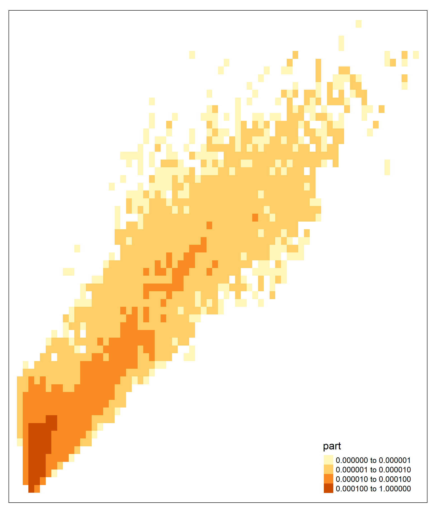
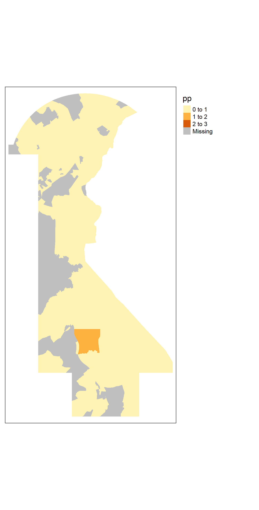

How to Run HYSPLIT Simulations and Calculate Affected Population with R
A HYSPLIT Concentration-Dispersion model simulates the transport of “particles” as the wind blows them. HYSPLIT simulations can be run online or with a free program that can be downloaded to a local computer. As researchers may want to model the dispersion of pollutants released over time and calculate the number of people affected, this tutorial describes how to use R to batch run HYSPLIT in a Windows-based computer and merge it with census data.
I want to thank Dr. Mark Cohen from NOAA ARL, who helped configure the parameters in HYPSLIT and Jason Tan who figured out how to HYSPLIT in R.
1. The Program
Users can download the Windows-based version of HYSPLIT here.
Once you have downloaded and installed the program, you will see a new C:/hysplit/ folder.
2. Gridded Meteorological Data
HYSPLIT uses existing meteorological data, including wind speed, direction, and other 3D meteorological data, to model particle dispersion. To run HYSPLIT, users must download Gridded Meteorological Data from specific areas and periods that the user would like to simulate their dispersion model. A list of Gridded Meteorological Data can be found here.
For the United States, I was recommended to use meteorological data from WRF ARW which provides meteorological data for every 27 kilometers, from 1980 to the present date.
Let’s assume that I would like to simulate the dispersion of 100 NO2 particles released on May 1, 2004, for 24 hours. In this case, I would need WRF ARW meteorological data, wrfout_d01_20040501.ARL, from this site.
I saved the downloaded meteorological data in a new folder C:/hysplit/met/, which is used to store all meteorological data from HYSPLIT.
3. The CONTROL File
A CONTROL file is a text file (with no extension) that specifies each simulation’s details. You can download a sample CONTROL file here.
The table below shows a clarification from Dr. Mark Cohen, which explains each line in the CONTROL file. Once you have created a control file, you need to save it as CONTROL in the C:/hysplit/working/ folder. I also created a new folder, C:/hysplit/working/output/, to store all outputs.
| CONTROL file entry | Definition | Notes |
|---|---|---|
| 04 05 01 00 00 | Start date and time for simulation (YR MO DA HR MN) | All times in HYSPLIT are Universal Coordinated Time (UTC) Minutes are optional Each entry must be two digits |
| 1 | Number of starting locations | |
| 39.7372 -75.5033 100.0 | Starting location (LAT LON HEIGHT) | Height is in meters above ground level West longitudes are negative If there is more than one starting location or height, each must be on a separate line |
| 24 | Duration of run | In hours |
| 0 | Vertical motion option | 0 = defaults to the meteorological data |
| 10000.0 | Top of the model domain (in meters) | Generally use 10000 or 25000 |
| 1 | Number of meteorological data files | |
| C:/hysplit/met/ | Directory of 1st meteorological file | If there is more than 1 file being used, then these two lines will be repeated for each file |
| wrfout_d01_20040501.ARL | Name of the 1st meteorological file | |
| 1 | Number of different pollutants | |
| NO2 | Pollutant 4-character identification name | |
| 1.0 | Emissions rate (per hour) | |
| 24 | Hours of emissions | |
| 00 00 00 00 00 | Release start time | With all zeros, the beginning of the run is the default |
| 1 | Number of simultaneous concentration grids | |
| 0.0 0.0 | Center of concentration grids | With all zeros, the source location is the default |
| 0.1 0.1 | Grid spacing (in degrees lat-lon) | |
| 20.0 20.0 | Grid span (in degrees lat-lon) | |
| C:/hysplit/output/ | Directory for the concentration grid output file | |
| cdump | Name of concentration grid output file | |
| 1 | Number of vertical levels | |
| 100 | Height of each vertical level (in meters above ground level) | This means that I am collecting concentration data for a layer 0-100 m. above the ground |
| 00 00 00 00 00 | Sampling start time | All zeros default to beginning of the run |
| 00 00 00 00 00 | Sampling end time | All zeros default to end of the run |
| 00 24 00 | Sampling interval (type hour minute) | 00 = average 24 = 24 hours 00 = 0 minutes |
| 1 | Number of pollutants depositing | |
| 0.0 0.0 0.0 | Particle diameter, density, and shape | |
| 0.0 46.0 0.1 1.6 0.01 | Deposition velocity (m/s), Pollutant molecular weight (g/mol), Surface reactivity ratio, Diffusivity Ratio, Effective Henry’s Constant | Refer to information from this site |
| 0.1 0.0 0.0 | Wet removal: Actual Henry’s Constant, In-cloud (GT1=1L/L; LT 1=1/s), Below cloud (1/s) |
Refer to information from this site |
| 0.0 | Radioactive decay half-life (days) | Refer to information from this site |
| 0.0 | Pollutant Resuspension (1/m) | Refer to information from this site |
4. Running a Simulation
After setting up a CONTROL file, users are ready to run a HYSPLIT simulation. The script below runs a HYSPLIT simulation based on the CONTROL file and converts the output into an ASCII text file. Note that the output text file format will be cdump_DAYOFYEAR_TIME at the start of the run. For example, a simulation that starts at midnight on May 1 would be cdump_123_00.
setwd("C:/hysplit/working")
system2("..\\exec\\hycs_std")
system2("..\\exec\\con2asc", args="C:/hysplit/output/cdump") 5. Using Loops to Batch Run HYSPLIT
The point of running HYPSLIT in R is because you would like to run HYSPLIT simulations for multiple locations, dates, and times. First, the user must download meteorological files for all the dates planned. After that, you can batch run all the simulations. Below is an example R code that I use to run HYSPLIT simulations every day in May, July, and August of 2004. Note that if you are running simulations for multiple locations on the same day, you must change the ASCII file’s name to be unique for each location.
library("tidyverse")
library("readr")
year<-2004 #set year
mlist<-c(5,7,8) #set month
dlist<-seq(from=1, to=31, by=1) #set dates
for (month in mlist) {
for (day in dlist) {
#read existing file
setwd("C:/hysplit/working")
concbase<-read_file("CONTROL_NO2")
#specify meteorological file
metfile<-paste0("wrfout_d01_",
as.character(year),
str_pad(as.character(month),pad="0",side="left",width=2),
str_pad(as.character(day),pad="0",side="left",width=2),
".ARL")
#specify date
startdate<-paste(substr(as.character(year),3,4),
str_pad(as.character(month),pad="0",side="left",width=2),
str_pad(as.character(day),pad="0",side="left",width=2),
"00")
#replace parameters from the original file
conc<-concbase %>%
str_replace("wrfout_d01_20040501.ARL", metfile) %>%
str_replace("04 05 01 00", startdate) %>%
str_replace("C:/hysplit/serc/", paste0("C:/", group, "/output/"))
#write control file, run simulation, and convert to ascii
write_file(conc,"CONTROL")
system2("..\\exec\\hycs_std")
system2("..\\exec\\con2asc", args="C:/hysplit/output/cdump") #args is the input file
}
}
#change filename to location1_DAYOFYEAR_TIME
loc<-"location1"
setwd("C:/hysplit/output/")
oldfiles<-list.files(pattern="cdump_")
newfiles<-str_replace(oldfiles, "cdump", loc)
file.copy(from=oldfiles, to=newfiles)
file.remove(oldfiles)
file.remove("cdump")6. Interpreting the Output
The output file from a single simulation should look like the one shown below. The column NO2 indicates the NO2 concentration in particles per grid. As our grid spacing is 0.1 latitude (~111 meters) and 0.1 longitude (~111 meters) with a model domain height of 10,000 meters, the NO2 column represents the number of NO2 particles per 123,210,000 cubic meters.
| X | DAY | HR | LAT | LON | NO2 | X00100 | file |
|---|---|---|---|---|---|---|---|
| 1 | 123 | 0 | 39.75 | -75.75 | 0 | NA | 10030_123_00 |
| 2 | 123 | 0 | 39.85 | -75.75 | 0 | NA | 10030_123_00 |
| 3 | 123 | 0 | 39.95 | -75.75 | 0 | NA | 10030_123_00 |
7. Calculating Affected Population
In this example, we will calculated the number of affected people based on a single HYSPLIT simulation from the CONTROL file in part 3.
First, we need to find the number of particles per grid after all the particles were released. The total number of particles is easier to work with than concentrations because the number of particles can be added when working with multiple simulations affecting a single area.
aream3<-111*111*10000 #111 m x 111 m x 10000 meters
df2<-df %>% mutate(part=NO2*aream3) %>%
group_by(LAT,LON) %>%
summarize(part=sum(part))In the next step, we convert the total number of particles data into a raster, and then to a polygon shapefile. Note that this is only one way to combine HYPSLIT and demographic data, and there are other ways to combine the two data sets. However, attention must be paid to the units in each step.
The polygon shapefile is shown below.
library("tidycensus")
library("rgdal")
library("spdplyr")
library("tmap")
library("raster")
minx<-min(df2$LON)#|
maxx<-max(df2$LON)
miny<-min(df2$LAT)
maxy<-max(df2$LAT)
LON<-seq(from=minx, to=maxx, by=0.1)
LAT<-seq(from=miny, to=maxy, by=0.1)
grid<-tidyr::crossing(LON,LAT)
hygrid<-merge(df2, grid, by=c("LAT","LON"), all=TRUE) %>%
dplyr::select(LAT,LON,part) %>%
mutate(part=ifelse(is.na(part),0,part))
coordinates(hygrid)=~LON+LAT
proj4string(hygrid)=CRS("+proj=longlat +datum=NAD83")
gridded(hygrid) = TRUE
r = raster(hygrid)
p<-rasterToPolygons(r, na.rm=TRUE, dissolve=FALSE)
p2<-p %>%
filter(part>0)
#tm_shape(p2)+tm_fill("part", breaks=c(0,0.000001,0.00001, 0.0001,1))
In the next step, we will combine HYPSLIT concentration data with block group data from the state of Delaware. First, we have to calculate the area of each HYSPLIT grid polygon, block group, and the area that each HYSPLIT grid and block group intersects.
p3 <- spTransform(p2, CRS("+init=epsg:4326"))
p3$hysplitgridarea<-area(p3)
library("tigris")
de_blck<-tigris::block_groups(state="DE", class="sp")
de_blck2<-spTransform(de_blck, CRS("+init=epsg:4326"))
de_blck2$blckarea<-area(de_blck2)
int<-intersect(p3, de_blck2)
int$area<-area(int)
intdf<-int@dataIn the next step, we calculate the number of person × particles within each area 𝑖 that a HYSPLIT grid ℎ and a block group 𝑏 intersects each other. The number of person × particles exposed can be calculated using the formula below.
\(PersonParticles_i = \dfrac{Area_i}{Area_h} \times Particles_h \times \dfrac{Area_i}{Area_b} \times Total_b\)
where \(\dfrac{Area_i}{Area_h}\) represents the number of particles in HYSPLIT grid \(ℎ\) falls into the intersecting area \(𝑖\). \(\dfrac{Area_i}{Area_b}\) represents the number of people in block grid \(𝑏\) that is exposed to the particles in area \(𝑖\).
The value of \(𝑃𝑒𝑟𝑠𝑜𝑛𝑃𝑎𝑟𝑡𝑖𝑐𝑙𝑒𝑠\) in each intersecting area is shown below.
blckdf <- get_acs(geography = "block group",
state="DE",
variables = c(Total="B03002_001"),
survey="acs5",
year=2019,
output="wide")
intblck<-merge(intdf, blckdf, by="GEOID", all.x=TRUE) %>%
filter(!is.na(TotalE)) %>%
mutate(pp=(area/hysplitgridarea)*part*(area/blckarea)*TotalE)%>%
dplyr::select(pp, GEOID, part)
intblck_map<-intblck %>%
group_by(GEOID, part) %>%
summarise(pp=sum(pp))
int2<-merge(int, intblck_map, by=c("GEOID", "part"))
#tm_shape(int2)+tm_fill("pp", breaks=c(0,1,2,3))+tm_layout(legend.outside = TRUE)
Afterwards, we can find the total number of people exposed to the pollutant by finding the sum of all \(𝑃𝑒𝑟𝑠𝑜𝑛𝑃𝑎𝑟𝑡𝑖𝑐𝑙𝑒𝑠_i\) in all areas \(𝑖\).
totalpp<-sum(intblck$pp)Additional Resources
References
Stein, A., Draxler, R., Rolph, G., Stunder, B., Cohen, M., Ngan, F. (2015). NOAA’s HYSPLIT Atmospheric Transport and Dispersion Modeling System. Bulletin of the American Meteorological Society, 96 (12), 2059-2077. DOI: 10.1175/BAMS-D-14-00110.1